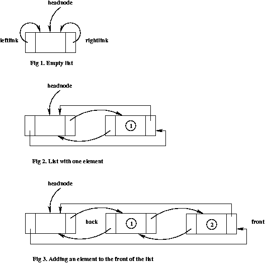

| Document id | : | ITS-MDD-CDSU_LIST-001 |
| Document name | : | List (CdSuList) Module Design Document |
| Author(s) | : | Titty Thomas, Vijaya Kumar |
| Contributor(s) | : | Shivali Mittal, Seema Jain, Biplab C |
| Approved By | : | Prakash R |
| Document Source | : | Internet Telephony Group, C-DOT, Bangalore |
| Copyright © 2004 by C-DOT. All rights reserved. Contents of publication may not be reproduced in any form without permission from C-DOT. |
| Document History | ||||
|---|---|---|---|---|
| Version No | Revised By | Revised On | Approved By | Remarks |
| Draft 1 | Titty | Jun 3, 2003 | Prakash R | |
| Draft 2 | Vijaya Kumar | Aug 18, 2004 | Shivali Mittal |
|
| |
|
|
|
|
| |
|
|
|
|
| |
|
|
|
|
1.0 Introduction
1.1 Purpose and Scope
1.2 Acronyms, Abbreviations and Definitions
1.3 References
2.0 Module Description
2.1 Design goals and constraints
2.2 Properties
2.3 Responsibilities
2.4 Functionalities
3.0 Decomposition Description
3.1 Class diagram
3.2 Entity Interaction Diagram
3.2.1 Entities
3.2.2 Channels
4.0 Resource usage
5.0 Design Considerations
6.0 Issues
7.0 Processing/Algorithm/Pseudo code/STD/Statecharts
8.0 Data Structures Required
9.0 Messages Received by module
10.0 Messages Transmitted by module
11.0 Test cases
Appendix
This document gives the design of CdSuList. CdSuList is a circular doubly-linked list. It supports insertion and removal of elements at the beginning, end and before given position. It provides an iterator to traverse through the list.
This document provides the design details CdSuList. The section 2 of the document gives design goals and constraints, properties, responsibilities and functionalities of the module. Section 3 gives the class diagram, its member functions and attributes. Later sections give the algorithms, data structures, etc.
| STL | : | Standard Template Library |
| [stl] | : | Designing Components with the C++ STL, Breymann, 1998, Addison Wesley Longman Limited. |
| [dp] | : | Design Patterns, Elements of Reusable Object-Oriented Software, Gamma et al, 1995, Pearson Education, Inc. |
None.
None.
The following are the methods/functions provided by the list.
This section provides the classes, entities, channels and messages.
The class diagram for CdSuList is given below.
+-----------+ +-----------+
| CdSuList | | Iterator |
+-----------+ +-----------+
| |<----------------| |
| | | |
+-----------+ +-----------+
3.1.1 CdSuList
CdSuList class defines a circular doubly linked list.
3.1.2 IteratorIterator class defines an iterator for traversing the list. It keeps tracks of the current element of the list.
The memory usage of the each data structure is given below.
| Entity | Memory usage |
|---|---|
| CdSuList | 8 bytes + 12 bytes for head node. |
| ListElement | 12 bytes, if the size of value is 4 bytes. |
| Iterator | 4 bytes |
For example, if the list contains 100 elements of size 4 bytes each, the total memory usage is 8 + 12 + (100*12) = 1220 bytes.
The list is implemented as a template to give the flexibility to specify the type of list element while creating the list.
7.1 CdSuList API
| Method | Description |
|---|---|
| void push_front (const ValType&) | Insert a new element at the beginning. |
| void pop_front () | Removes the first element. |
| void push_back (const ValType&) | Insert a new element at the end. |
| void pop_back () | Removes the last element. |
| void clear () | Erases all the elements. |
| ValType& front () | Returns the first element. |
| ValType& back () | Returns the last element. |
| bool empty () | Returns true if the list is empty, else false. |
| int size () | Returns the size of the list. |
| CdSuList::iterator begin () | Returns an iterator pointing to the beginning of the list. |
| CdSuList::iterator end () | Returns an iterator pointing to the end of the list. |
| CdSuList::iterator erase (CdSuList::iterator&) | Erases an element at the given iterator position. |
| CdSuList::iterator insert (CdSuList::iterator&, const ValType&) | Inserts an element before given an iterator position and returns an iterator to the new element inserted. |
| CdSuList::iterator erase (CdSuList::iterator& first, CdSuList::iterator& last) | Erases all elements from first iterator to last iterator excluding last iterator and returns last iterator. |
7.2 Iterator API
| Method | Description |
|---|---|
| ValType& operator* () | Dereference operator. Returns the element at the current iterator position. |
| CdSuList::iterator& operator++ () | Preincrement operator. Iterator points to the next position. |
| CdSuList::iterator operator++ (int) | Postincrement operator. Iterator points to the next position. |
| bool operator== (const iterator&) | Returns true if two iterators are equal, else false. |
| bool operator!= (const iterator&) | Returns true if two iterators are not equal, else false. |
A brief description of the CdSuList API is given below:
CdSuList<int> intList;
intList.push_back (1); intList.push_back (2); intList.pop_back (2);
CdSuList<int>::iterator iter;
iter = intList.begin ();
iter++;
int num = *iter;
intList.clear ();
CdSuList::iterator prevIter = intList.insert (iter, 7);
The list is implemented as a circular doubly linked list. The algorithm used is the standard circular doubly linked list algorithm. For more on iterator, refer [stl] and [dp].
The following diagrams shows an empty list, list with one element and list after adding an element to the front.

7.5 Statechart DiagramNone.
The methods and attributes of the CdSuList Iterator classes are given below.
8.1 CdSuList class
template <class ValType>
class CdSuList
{
Public methods
CdSuList ();
CdSuList (CdSuList& list);
~CdSuList ();
void push_front (const ValType& data);
void pop_front ();
void push_back (const ValType& data);
void pop_back ();
void clear ();
ValType& front ();
ValType& back ();
bool empty () const;
int size () const;
Private members
// node of the list
struct ListElement
{
ValType data; // data
ListElement* rLink; // right link
ListElement* lLink; // left link
};
// the list has special node called a head node, the data field
// of which doesn't contain any information
ListElement* headNode;
int count;
Public methods
Iterator class
class iterator
{
Public methods
iterator (ListElement* init = 0);
ValType& operator* ();
const ValType& operator* () const;
iterator& operator++ ();
iterator operator++ (int);
bool operator== (const iterator& iter) const;
bool operator!= (const iterator& iter) const;
Private members
ListElement* current;
friend class CdSuList;
}; // iterator
iterator begin () const;
iterator end () const;
iterator insert (iterator& iter, const ValType& data);
iterator erase (iterator& iter);
iterator erase (iterator& begin, iterator& end);
};